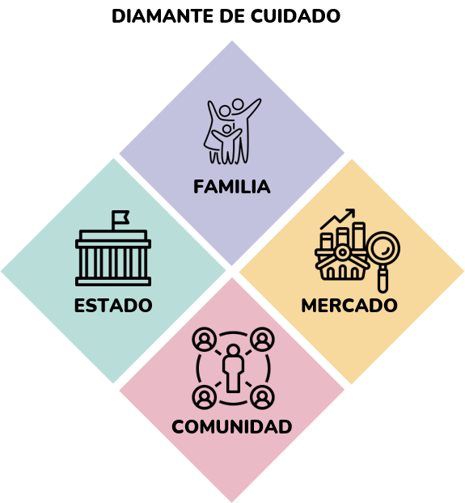

Módulo 3: Aplicaciones de análisis de datos en python a economía del cuidado
Te damos la bienvenida al Módulo 3. Nuestro último módulo.
En este módulo, te adentrarás en el contexto del cuidado en Colombia, explorando desde las nociones básicas hasta la creación y análisis de indicadores de cuidado. Utilizando datos de la Gran Encuesta Integrada de Hogares (GEIH), aprenderás a manejar información esencial sobre el cuidado y a aplicar técnicas de visualización espacial.
Abordarás conceptos básicos de cuidado, comprenderás la estructura y el uso de la GEIH, y utilizarás sus datos específicos para el análisis de cuidado. También te familiarizarás con los fundamentos de los sistemas de información geográfica (GIS), el uso de Divipola y el Marco Geoestadístico del DANE. Además, te introducirás a Geopandas, aprenderás a obtener y visualizar shapefiles, y a crear representaciones gráficas de mapas utilizando Python.
Este módulo está diseñado para proporcionarte una base sólida en el análisis y visualización espacial de datos de cuidado en Colombia. ¡Estamos emocionados de acompañarte en este viaje de aprendizaje!
Objetivo de aprendizaje:
Comprender el contexto del cuidado en Colombia, desde las nociones básicas hasta la construcción de diversos indicadores de cuidado y la visualización espacial de estos utilizando datos de la Gran Encuesta Integrada de Hogares (GEIH).
Contenidos:
- Nociones básicas de Cuidado.
- Nociones básicas de la Gran Encuesta Integrada de Hogares (GEIH).
- Uso de datos de la GEIH referentes a cuidado.
- Conceptos básicos de GIS.
- Divipola y Marco geoestadístico del DANE.
- Introducción a Geopandas.
- Obtener y visualizar shapefiles.
- Visualización gráfica de mapas en Python.
Material para el desarrollo de la sesión:
Para este módulo, tendrás acceso a tres Colab notebooks que se utilizarán a lo largo de la sesión. Estos notebooks están diseñados para guiarte a través de los temas clave, permitiéndote practicar con ejemplos y ejercicios específicos. El primer notebook se centra en el uso de pandas para realizar operaciones de merge, el segundo trabaja con datos de la Gran Encuesta Integrada de Hogares (GEIH), y el tercero se enfoca en la creación de mapas con Geopandas utilizando datos del censo. Asegúrate de tener acceso a Google Colab y una cuenta de Google para poder participar plenamente en las actividades y maximizar tu aprendizaje.
Links Colab Notebooks: sesión 3 y sesión 4
¿Qué se entiende por Cuidado?
El cuidado abarca un espectro amplio de actividades esenciales que sostienen la vida y promueven el bienestar tanto a nivel individual como comunitario. Este concepto engloba todas las labores destinadas a satisfacer las necesidades básicas físicas, emocionales y sociales de otros seres humanos (Herrera et al., 2020). Puede ser proporcionado en diversos contextos y por múltiples actores, incluyendo el Estado, el mercado, organizaciones no gubernamentales y los propios hogares. Esta diversidad de proveedores conforma lo que se denomina el "diamante de cuidado", un marco conceptual que subraya la interacción compleja entre estos actores en la provisión de cuidado (Razavi, 2007).
 El cuidado puede ser proporcionado por diversos actores, como el Estado, el mercado, las organizaciones no gubernamentales y los hogares, formando lo que se ha denominado el “diamante de cuidado” (Razavi, 2007) .
El enfoque hacia el cuidado tiene profundas implicaciones sociales y económicas. En términos de igualdad de género, la distribución desigual de responsabilidades de cuidado ha perpetuado tradicionalmente roles restrictivos para las mujeres, limitando sus oportunidades económicas y sociales. Abordar estas disparidades no solo es crucial para promover la equidad de género, sino también para fortalecer el tejido social y avanzar hacia un desarrollo inclusivo y sostenible.
¿Cómo se clasifica el Cuidado?
Odit, laudantium, dolores, natus distinctio labore voluptates in inventore quasi qui nobis quis adipisci fugit id! Aliquam alias ea modi. Porro, odio, sed veniam hic numquam qui ad molestiae sint placeat expedita? Perferendis, enim qui numquam sequi obcaecati molestiae fugiat!
Dignissimos, beatae, praesentium illum eos autem perspiciatis? Minus, non, tempore, illo, mollitia exercitationem tempora quas harum odio dolores delectus quidem laudantium adipisci ducimus ullam placeat eaque minima quae iure itaque corporis magni nesciunt eius sed dolor doloremque id quasi nisi.
Referencias
Bernard, J. (2016). Python Data Analysis with pandas. In: Python Recipes Handbook. Apress, Berkeley, CA. https://doi.org/10.1007/978-1-4842-0241-8_5
Hunter, J. D. (2007). Matplotlib: A 2D graphics environment. Computing in Science & Engineering, 9(3), 90–95. https://doi.org/10.1109/MCSE.2007.55
McKinney, W. (2010). Data Structures for Statistical Computing in Python. In S. van der Walt & J. Millman (Eds.), Proceedings of the 9th Python in Science Conference (pp. 56–61). https://doi.org/10.25080/Majora-92bf1922-00a
McKinney, W. (2022). Python for data analysis: Data wrangling with Pandas, NumPy, and IPython. O'Reilly Media, Inc. https://wesmckinney.com/book/
Nelli, F. (2018). Python data analytics with Pandas, NumPy, and Matplotlib.https://doi.org/10.1007/978-1-4842-3913-1
The pandas development team. (2020). pandas-dev/pandas: Pandas (Version latest) [Software]. Zenodo. https://doi.org/10.5281/zenodo.3509134